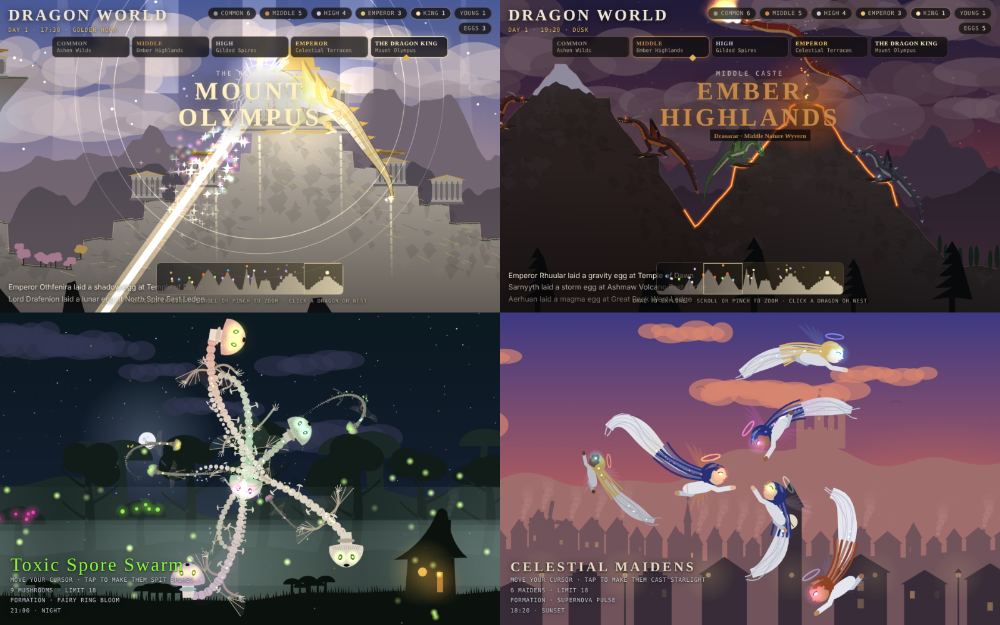

Mythic Canvas
Living worlds of mythic creatures, drawn entirely in code. Four cursor scenes where a swarm rings around you and dances when you go still, and Dragon World, a whole realm to explore. Every scene lives through its own day and night.
Heavenly mountains · originalBone DragonsSkeleton dragons that grow celestial skins and long beards, then ascend into stars.
Heavenly mountains · realisticRealistic DragonsRichly scaled dragons with painted heads, horns and whiskers. The royal mantle can be switched on or off.
Age of dragons · new worldDragon WorldA living realm that rises from the ashen wilds to the dragons' Olympus: five castes, 28 elements, nests and hatchlings, and the Dragon King. Drag to explore, click to meet them.
Toxic forestToxic MushroomsPoisonous mushroom creatures that ripen, spit spores and reseed the forest floor.
Village & old townCelestial MaidensWinged maidens in flowing gowns whose colors bloom as they circle you.
